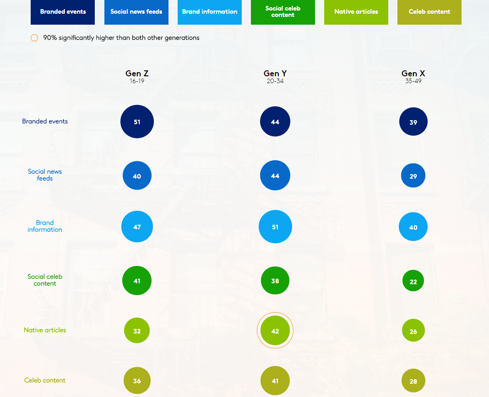

Atteindre et fidéliser les Z
Investir dans le physique
Créer des évènements
Créer des événements : Le cabinet d'études Harris Poll & Eventbrite Inc a mené une enquête en 2015 démontrant qu’une grande majorité, soit 80% des Z et millennials, préfèrent payer pour une expérience que pour des biens. Les Gen Z sont en quête de nouvelle expériences, d’exclusivité et ils sont prêts à associer des moments uniques à une marque. Les événements sponsorisés sont un excellent moyen de rentrer en contact et de fidéliser les Z. En invitant les Z a des événements, les marques créent un lien fort basé sur l’émotion et les souvenirs positifs. Les événements sont également l’occasion de gagner en notoriété sur les réseaux sociaux. Premièrement en participant aux événements les Z partagent des photos, snap… avec leur communauté. Cela leur permet d’être valorisé auprès de leur communauté et partager à leur tour du contenu qualitatif et unique. Toujours d’après l’étude du cabinet d'études Harris Poll & Eventbrite Inc "81% des millennials déclarent partager des photos de l’évènement sur les réseaux sociaux, 71% utilisent le hashtag de l’événement sur les réseaux sociaux, 67% suivent la marque, 56% s’inscrivent à la newsletter" Puis les événements permettent aux marques de créer le contenu de marque le plus apprécié des Gen Z. Etablir un rapport privilégié avec les Z passe également par les goodies "collector" et cadeaux, renforçant ainsi l’aspect unique.

Les événements sont également l’occasion de mettre en place des partenariats avec des influenceurs.
Les Z aiment rencontrer leurs Youtubeurs ou blogueurs préférés. En leur donnant l’occasion de partager une expérience avec eux, la marque associe facilement son nom à l’image de l’influenceur.
De nombreux événements sont organisés chaque année. Le salon VidCon est le plus connu autour des star de Youtube.
Street marketing
Le street marketing ou marketing de rue, est une manière de partager une expérience avec les clients Z.
Une bonne opération de street marketing ciblant les Z devra être virale sur les réseaux sociaux. Cette dimension doit être prise en compte à la création de la campagne. Les possibilités sont infinies et les Gen Z sont très ouverts à ce type de communication.
http://www.danstapub.com/200-exemples-brillants-et-creatifs-de-street-marketing/
Innovez, surprenez ! Le digital offre un scope de possibilités infinies. La réalité augmentée, la géolocalisation, les tablettes… sont autant de supports techniques qui permettent aux entreprises d’innover en terme d’expérience consommateur. Le support technique prend une place importante dans la digitalisation d’un point de vente. Les contraintes technologiques évoluent et offrent de nouvelles possibilités à chaque nouvelle innovation.
Quatre idées de campagne pour toucher la génération Z
http://www.e-marketing.fr/Thematique/social-media-1096/Diaporamas/campagne-marketing-generation-311247/moocs-tutoriels-seduire-sharing-culture-311250.htm#Diapo#DdwFjpgFcUYukyVE.97
Adapter les points de ventes
Le réseau physique de distribution a toujours beaucoup d’importance pour les Gen Z.
Il représente plus de 9 ventes au détail sur 10 en 2016.
Depuis plusieurs années, les points de vente physiques ont été écartés de la stratégie d’innovation des entreprises qui se sont concentrées sur le e-commerce, laissant les magasins en retard sur les attentes des clients et leur mutation digitale.
Les entreprises ont la possibilité d’offrir une expérience d’achat marquante et innovante grâce à la combinaison des nouvelles technologies et le point de vente physique.
L’expérience dans le point de vente doit être cohérente avec la communication globale de la marque. Si l’entreprise cherche à avoir une relation détendue avec le consommateur, le point de vente doit refléter cette ambiance : le contact avec le personnel du magasin, les couleurs, et le parcours.
L’expérience consommateur peut reposer sur les émotions du consommateur : le jeu, la découverte ou encore l’apprentissage.
Du point de vue du consommateur Z, le manque de personnalisation est une faiblesse pour les points de vente. L’offre peut être spécialisée mais elle n’est pas ciblée en fonction de chaque consommateur.
Le consommateur Z est renseigné. Il veut avoir accès à l’information complète et optimiser son temps. Lors d’un déplacement en magasin, l’expérience peut être considérée comme une perte de temps si le bien recherché n’est pas disponible ou si l’information proposée ne correspond pas à celle présentée sur internet.
Malgré l’essor rapide du e- commerce, la majorité des achats se concrétisent toujours dans le réseau physique. Le magasin physique est un espace de rencontre avec le consommateur Z, un lieu propice pour créer une expérience. L’immersion expérientielle peut être très variée en fonction du lieu.
Le principal frein des Gen Z pour l’achat en ligne est l’absence du toucher. En fonction des catégories de produits le besoin d’essayer ou de toucher le produit est nécessaire pour le consommateur. Pour d’autres produits la vision suffira. Créer des espaces personnalisés pour les adolescents, des espaces répondant aux codes et aux pratiques de ces groupes est une manière efficace de fidéliser les Gen Z.
De nombreuses enseignes ont commencé à adapter leurs points de vente en fonction des attentes des Z. L’enseigne de prêt à porter Jennifer a, par exemple, choisi d’augmenter l’espace dans les cabines, permettant ainsi aux Z de choisir ensemble leurs vêtements.
La livraison et les frais qui peuvent lui être liés, incitent certains consommateurs à favoriser les achats In store. Ils utilisent le site e-commerce uniquement en site vitrine.
Les abonnements annuels donnant accès à la livraison à volonté sont très apprécié des Z.
Avec l’essor du digital le parcours client n’existe plus. Une étude conduite par Google a analysé "le tunnel de commande de 3000 consommateurs et rendait compte de 3000 chemins différents" : le web, les médias sociaux, les réseaux physiques et les mobiles… Tous ces éléments sont nécessaires à la stratégie d’une entreprise si elle veut toucher les consommateurs.
Les Gen Z sont des digital natives, ils ne voient pas la différence entre les différents réseaux de distribution ou d’achat. La phygitalisation des points de ventes est un indispensable pour une enseigne qui souhaite fidéliser cette génération.
Les éléments digitaux incorporés au point de vente doivent être directement liés et adaptés.
Le manque de lien entre les différents canaux peut rendre l’expérience utilisateur désagréable pour les Z. l'exemple de l’entreprise de téléphonie Orange en est une illustration. Le consommateur peut effectuer un achat en ligne, par téléphone ou dans un magasin. Mais lorsqu’il souhaite suivre des éléments de son compte, telle que la facture d’un téléphone, il ne peut s’adresser qu'uniquement à la boutique exacte où il a effectué l’achat ou en ligne si l’achat a eu lieu en ligne. Ce manque de transversalité compromet la fidélité du consommateur notamment pour la nouvelle génération.
De nombreuses actions sont possibles pour digitaliser un point de vente et ainsi répondre aux attentes des Z.
Fournir des e-services
La plus simple des étapes dans la phygitalisation est de proposer à ses clients une connexion wifi gratuite.
L’intégration sur le site internet de l’ensemble du catalogue du magasin, avec une information enrichie sur les produits.
Le paiement est un des aspects qui évolue le plus rapidement grâce au digital. De nombreuses méthodes sont testées pour rendre cette étape du parcours client plus fluide et agréable et ainsi maximiser la transformation d’achat.
Un des exemples d’innovation en matière de paiement peut être le sac intelligent créé par la startup Twyst en collaboration avec Abode, le premier "sac de shopping connecté" a été conçu. Le sac connecté est une réelle innovation dans la phygitalisation des points de vente et remet en question l’une des étapes incontournables de l’achat in store : le passage en caisse. Ce système offre au consommateur une expérience d’achat simplifiée et un gain de temps appréciable.
Développer les drives est une stratégie qui peut être payante. Le drive fait partie des relais de croissance les plus important de ces dernières années. Le drive permet de répondre à une recherche de rapidité de la part des Z qui seront très certainement des adeptes de cette pratique dans quelques années.
Virtualiser l’espace
Le Click and Collect : durant les soldes d’été, le système de réservation en ligne et de livraison en magasin a beaucoup été utilisé par les consommateurs, le magasin se transformant alors en cabine d’essayage du site e-commerce de la marque. Certaines enseignes ayant saisi le phénomène, ont dédié des cabines uniquement au click and collect, le but étant d’optimiser le temps du client. D’autres enseignes de prêt à porter ont choisi de favoriser les clients du click and collect avec des pass permettant de ne pas faire la queue aux différentes étapes d’achat.
Des "miroirs d’essayage" pour pallier à l’attente et à la gêne provoquée par l’essayage dans le secteur du prêt à porter.
Des boutiques pilotes entièrement orientée sur l’innovation digitale. Sephora a lancé en 2016 une boutique qui fait office de modèle dans l’exploitation des innovations.
Boutique Sephora
Certaines enseignes mettent en place des bornes de satisfaction à la sortie des boutiques afin de récolter les avis des consommateurs ainsi que connecter le client physique à son compte client.
La géolocalisation des offres promotionnelles : plusieurs applications permettent aux consommateurs de recevoir des offres personnalisées en fonction du trajet parcouru. Cela peut inciter le consommateur à se rendre dans un point de vente situé près de lui.
Des applications appelées "product locator", aident le consommateur à localiser les produits à l’intérieur du point de vente.
Equiper et former le personnel
Les vendeurs commencent à être équipés les vendeurs de tablette, cela permet de faciliter le choix du client grâce à des conseils personnalisés en fonction de ses précédents achats et les informations renseignées sur son compte fidélité.
De nombreuses formations aux nouvelles technologies sont possibles. S’assurer de la maitrise des nouvelles technologies, des vendeurs, afin d’optimiser les outils numériques mis en place.

Personnaliser l’offre et la tarification
Une autre pratique déjà pratiquée aux Etats Unis pourrait répondre au besoin de personnalisation et à la recherche d’économie des Z : la tarification dynamique.
Sur le même principe que la Sncf ou uber les prix dynamiques se basent sur le concept du yield management ("Le yield management est une technique marketing et commerciale basée sur une tarification et une offre flexibles qui est utilisée dans les services caractérisés par une forte présence de coûts fixes et par une certaine inertie des capacités proposées"). Les prix changent en fonction dans les rayons selon les horaires ou le profil du client. Les Z sont habitués à ce type de pratiques marketing et y voient une opportunité de faire des économies.
Les prix dynamiques permettent également d’assurer une cohérence entre les prix en ligne et en magasin. Cette nouvelle pratique impose la modernisation des étiquettes et représente un coût important pour les enseignes. Ces étiquettes modernes permettent de répondre à un autre besoin des Z : l’accès à l’information, le stock disponible, la traçabilité, les couleurs existantes .. les possibilités de personnalisations sont nombreuses.
Selon RichRelevance, entreprise spécialisée dans la personnalisation omnicanale, la génération Z se montre très à l'aise avec les nouveaux outils digitaux comme la reconnaissance faciale, cette technique pourrait être un véritable allié pour les enseignes car elle leur permettrait de personnaliser l’offre dès l’entrée en magasin.